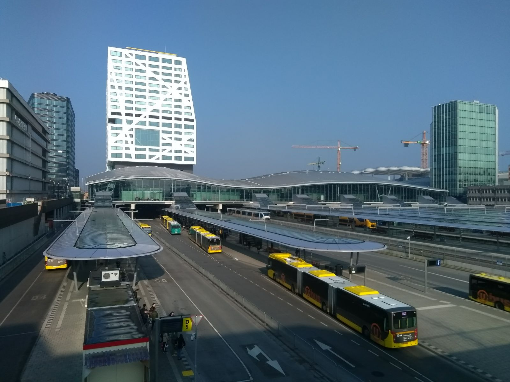

Home
Clips
Stations
The NS
Train Types
Graph
Trains in the Netherlands
Toggle bold
Toggle italic
white
yellow
red
blue
Stations in the Netherlands
Amsterdam CS
The main station of Amsterdam
Utrecht CS
The main station of Utrecht

Rotterdam CS
The main station of Rotterdam